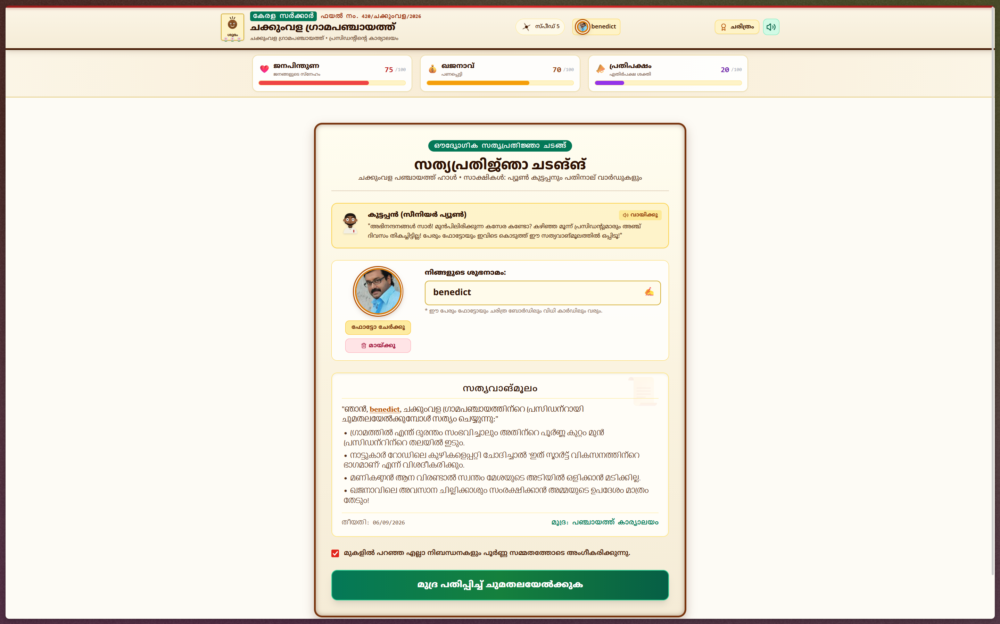
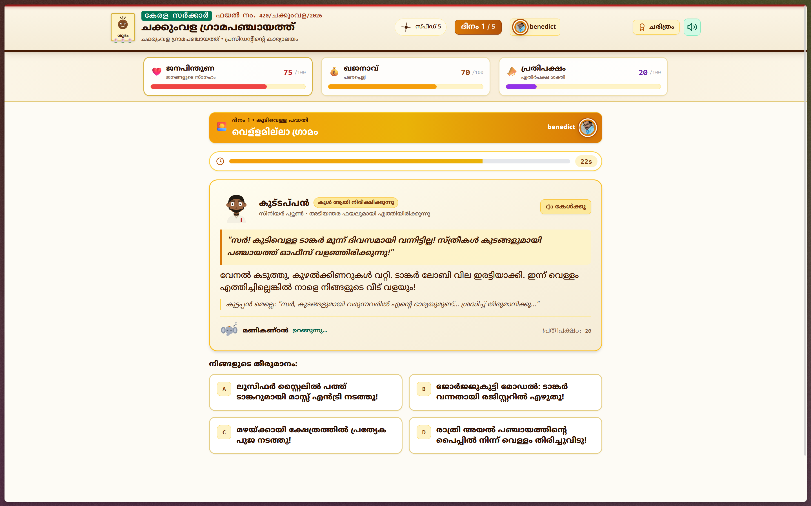
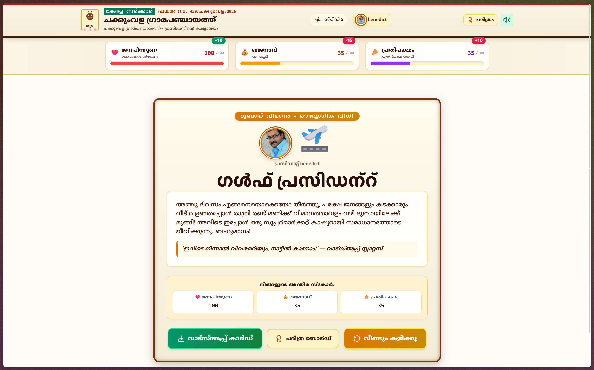

Project Journal — പഞ്ചായത്ത് പ്രസിഡന്റ് Simulator · Team Zero Blunders · Useless Projects 3.0
This isn't a summary written after the fact. It's the night itself — reconstructed from commit times, file timestamps, ffmpeg readouts and one very tired group chat. If it reads like we were losing our minds, that's because the file numbers check out.
It started the way all bad decisions start: somebody created a folder called USELESS-PROJECT and said "broo, aura farming tomorrow". So we researched TinkerHub's make-a-thon like it was a UPSC exam — past winners, the handbook, the starter repo with its 1.2k forks. Then the line that decided everything: judging is 60% creativity, 20% complexity, 20% cross-disciplinary. The IDEA is the whole game. No decks. No "impact". Just one night and whatever pointless thing comes to mind.
On call, first chai: a chai-locking machine, an Amma chatbot, an over-engineered canteen, a mystery ARG app, an AI that judges your surroundings. All software-only, all Malayalam-soaked. Then the sentence that ended the debate — what if YOU are the panchayat president and every option is terrible? Fully Malayalam audio and text. A timer. No correct answers, only funny ones. Second chai ordered. Decision locked.
Vite + React + Tailwind, Kerala-office tokens, four Malayalam font families loaded because one is never enough. package.json was born at 22:27 and the night officially had a pulse. First fight of the night: Cinzel vs Baloo Chettan 2 for headings. Baloo won by unanimous vote (2–0).
A tiny useReducer engine now runs the entire republic: HOME → OATH → DAY ×5 → CONSEQUENCE → ENDING, with a Wall of Presidents in localStorage for the fallen. Committed as 4a969f2, then the engine as a134065. Skeleton standing. Soul pending.
Six crises drafted in one sitting: water mafia, street-dog unions, exam-eve blackouts, one hall with two weddings, a collector-inspection final boss. Every option stuffed with the movies we grew up on — Lucifer mass entries, Drishyam register frauds, Kilukkam mass weddings, Sandesham-style protests. House rule, written on metaphorical wall: no option may be clearly right, and every option must hurt something. The comedy IS the dilemma.
The game was barely half-built — timer working, voices still robots, elephant freshly unemployed. Then the midnight inspection happened, and the whole night changed direction. Kuttappan filed it under Exhibit: Hope. Details below. Do not skip.
Running on pure "this can actually win" energy, we did the bravest thing of the night: fired elephant-happiness and amma-approval — two stats that never decided anything — and hired പ്രതിപക്ഷം (Opposition) in their place. Starts at 20, kills you at 100 with a no-confidence motion. Manikandan the elephant was demoted to mascot. He took it personally (he now wiggles).
Thirteen clips. Full overacting. Phone held like a microphone two centimetres from the mouth while the neighbourhood slept. A 47-slot map (voiceLines.js) was built so that dropping an MP3 into a folder wires it into the game with zero code changes. One clip — wrong_1 — came out at whisper volume. Nobody noticed. Yet.
Word from the midnight inspection had travelled. Participants started drifting to our desks between timer ticks, asking how the voices chained, how the newspaper accused whoever clicked fastest, how a whole government fit inside one reducer. We demoed. They laughed. Somebody's 2 AM restarted. That hour is the entire point of this hackathon.
Clicked Take Charge to test the oath flow. A majestic synth conch blast rang out — dual oscillators, 210→285 Hz, genuinely proud of it. Both of us, simultaneously: "...was that an elephant?" It was retired from that moment within minutes. Your intro recording owns it now. Some sounds are too powerful for 3 AM.
The ugliest discovery of the night: stupid decisions kept winning. Joke options secretly paid support points; the hero ending ignored opposition entirely. So at nearly 4 AM we did the most over-engineered thing possible — wrote a Node script that simulated 8 full playstyles through the real game data. Splurge-everything: dead Day 5, bankrupt. Total silence: dead Day 4. Evil genius: Commission King at opposition 90. Balance v3 shipped with proof, not vibes.
The Day screen had twin Kuttappans, cards inside cards, labels shouting over the story. Merged into ONE briefing card, timer shrunk to a pill. Then, because sleep was already a rumour, hand-drew an SVG sprite cast — Kuttappan with five mood faces (including X-eyed dead), Manikandan with three states, a smiling coconut. Somewhere in there, a mustache curl took twenty minutes. Worth every pixel.
That whisper clip? Measured: peak -19.9 dB. Boosted +18.9 dB, then peak-normalized all 12 clips to the same level so the hero ending wouldn't deafen anyone after the unworthy one whispered. Democracy of decibels, signed and sealed.
Five honest feature batches, ready to ship — and the remote had moved (teammate's README edit). Push rejected at dawn is a special kind of horror. Fetched, read the diff, rebased clean, pushed green. Never force-push a shared hackathon repo. Tattoo it.
Production build clean, audio verified 200 + audio/mpeg over HTTP, live link in the README. The president's portrait defaults into every newspaper wanted-box. Sleep: still a rumour. Aura: farmed.
The night built it; the following days hardened it. A phantom-audio leak (Chrome firing end events for cancelled speech — a ghost concert on untouched screens) got exorcised with token guards. An absolute-path 404 got one line of invincibility (base: './'). Screenshots were captured mid-game like crime-scene photos. And this journal — File 420 — was opened, because a night like that refuses to stay undocumented.
Around midnight the hall went quiet except for our corner — timer ticking, robot Kuttappan shouting half-finished Malayalam, a president who could die of potholes. The game was barely half-built. Then the mentors came on their rounds. Then the staff coordinators. We showed them the mess: the evidence board, the mugshot newspaper, the elephant that had just been fired from the stats.
They laughed. Not the polite kind — the real kind, the kind that makes neighbouring tables turn around. And then came the sentence that rewired the entire night: "ഇതിന് ജയിക്കാൻ കഴിയും — this can actually win." Two dead-eyed developers rebooted on the spot. Somebody's 2 AM restarted. Kuttappan filed it under Exhibit: Hope.
Word travelled fast. Soon other participants were drifting to our desks — "bro, how are you building like THIS?" — asking how the voices chained together, how the newspaper accused whoever clicked fastest, how an entire government fit inside one reducer. We demoed between timer ticks. They laughed. They took notes. For about an hour at midnight, Chakkumvila was the capital of the hackathon.
Scene, had we drawn it: two developers, one glowing laptop, three words that rebooted the night.
Symptom: clicking Take Charge played a sound suspiciously like an elephant trumpet.
Culprit: our synth conch horn (210→285 Hz sweep). Majestic. Pachyderm-adjacent.
Fix: retired the conch from that moment — the recorded welcome speech owns it now.
Symptom: wrong-answer audio leaked onto fresh option screens nobody had touched yet.
Culprit: Chrome fires onend even for cancelled speech — clicking through mid-roast ghost-triggered the chained sting.
Fix: token-guarded every voice callback; cancelled chains die silently. Class of leak: extinct.
Symptom: intro recording never played; robot voice covered for it.
Culprit: absolute /voice/… path 404'd outside domain-root hosting.
Fix: Vite base: './' — relative paths everywhere, verified 200 + audio/mpeg over HTTP.
Symptom: every playstyle won. Democracy felt fake.
Culprit: joke options paid support points; hero ending ignored opposition.
Fix: the 8-playstyle simulation above. Math restored faith in the republic.
Every great government runs on messaging. Ours ran on these, taped to the wall above the laptops. Formats studied from the classics at memes.co.in — then redrawn by our own hands, because the panchayat respects copyright (mostly). No stolen pixels were harmed.
Real reaction clips, captioned by the cabinet. Lightweight looping video (GIFs were eating megabytes like opposition eats treasury).
Reaction clips via memes.co.in (free for creators): Ha Gay · Ash Realizes · Scared Dog · Dap Up · Pedro Points · Pattinson Walk
base: './' is one line of invincibility.Game architecture, state engine, balance math, audio/voice chaining engine, UI theme, SVG sprite cast, git wrangling, docs.
Story scenarios, Malayalam comedy writing, voice direction, playtesting, bug reports, README finishing.


